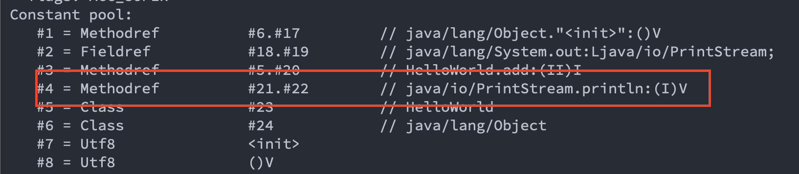

Java 类的加载过程
文章目录
前言
上次说到了类的加载器，分为 BootstrapClassLoader 、 ExtClassLoader 、 AppClassLoader 。具体是怎么加载的没说，这次来说一说类的加载过程，主要分为装载、链接、初始化。其中链接又可以分为验证、准备、解析。
装载
装载就是根据类全限定名查找该类的二进制流，然后创建 Class 对象。具体分为如下过程
ClassLoader加载二进制流，这个二进制流可以是个本地的.class文件、jar文件、网络上的文件或者是用代码生成的二进制流(动态代理就是这么干的)。- 把字节流中的静态存储结构转化为方法区的运行时数据结构。
- 在内存中创建
Class对象，作为这个Class类型各种数据对外访问的入口。
链接
链接分为三个步骤，分别是验证、准备、解析。链接和装载是同时进行的。
验证
验证是链接的第一步，验证的目的是为了确保 .class 文件的字节流中包含的信息符合当前虚拟机的要求，并且不会危害虚拟机自身的安全。
验证主要有以下几个方面
- 文件格式校验：检验字节流是否符合
class文件格式规范，并且能被当前版本的虚拟机处理。比如：是否以魔数开头，版本号是否在可执行的范围内等等。 - 元数据校验：对字节码描述的信息进行语义分析，以保证符合
Java语言规范的要求。比如：这个类是否有父类，是否继承了final的类等等。 - 字节码校验：通过数据流和控制流分析，确定程序语义是合法、符合逻辑的。这个阶段是验证中最复杂的一个，比如：保证任何跳转指令都不会跳转到方法体以外的字节码指令上。
- 符号引用校验：符号引用验证可以看作是对类自身以外（常量池中的各种符号引用）的各类信息进行匹配性校验。比如：符号引用验证可以看作是对类自身以外（常量池中的各种符号引用）的各类信息进行匹配性校验，通俗来说就是，该类是否缺少或者被禁止访问它依赖的某些外部类、方法、字段等资源。
准备
准备阶段是正式为类中定义的变量分配内存并设置类变量初始值的阶段，初始值通常情况下是数据类型的零值。这时候进行内存分配的仅包括类变量，而不包括实例变量，也就是用 static 修饰的变量。
基本数据类型的零值如下
| 数据类型 | 零值 |
|---|---|
| int | 0 |
| long | 0L |
| short | (short)0 |
| char | ‘\u0000’ |
| byte | (byte)0 |
| boolean | false |
| float | 0.0f |
| double | 0.0d |
| reference | null |
还有一种特殊情况下载准备阶段会不是零值，这种情况就是静态常量。
public static final int value = 100;
上面这行代码在准备阶段就会被赋值为 100
解析
解析阶段是Java虚拟机将常量池内的符号引用替换为直接引用的过程。  图中画出来的就是符号引用，符号引用以一组符号来描述所引用的目标，符号可以是任何形式的字面量，只要使用时能无歧义地定位到目标即可。
直接引用是可以直接指向目标的指针、相对偏移量或者是一个能间接定位到目标的句柄。直接引用是和虚拟机实现的内存布局直接相关的，同一个符号引用在不同虚拟机实例上翻译出来的直接引用一般不会相同。可以理解为真正的地址。
初始化
类的初始化阶段是类加载过程的最后一个步骤，之前介绍的几个类加载的动作里，除了在加载阶段用户应用程序可以通过自定义类加载器的方式局部参与外，其余动作都完全由Java虚拟机来主导控制。直到初始化阶段，虚拟机才真正开始执行类中编写的 Java 程序代码，将主导权移交给应用程序。
初始化阶段就是执行类构造器 <clinit>() 方法的过程。 <clinit>() 并不是程序员在Java代码中直接编写的方法，它是编译器自动生成的。
<clinit>() 方法对于类或接口来说并不是必需的，如果一个类中没有静态语句块，也没有对静态变量的赋值操作，那么编译器可以不为这个类生成 <clinit>() 方法。
<clinit>() 方法是由编译器自动收集类中的所有类变量的赋值动作和静态语句块（static{}块）中的语句合并产生的，简单点就是调用静态代码块和给静态变量赋值。
编译器收集的顺序是由语句在源文件中出现的顺序决定的，静态语句块中只能访问到定义在静态语句块之前的变量，定义在它之后的变量，在前面的静态语句块可以赋值，但是不能访问。如下所示
|
|
初始化时机
- 虚拟机启动时，初始化包含
main方法的主类。 new对象时，如果目标对象没有初始化则会进行初始化- 访问静态变量或方法时，如果目标对象没有初始化则会进行初始化
- 子类初始化时，父类没有初始化则会先初始化父类
- 反射调动到的类没有初始化，则会进行初始化
- 第一次调用
java.lang.invoke.MethodHandle时，需要初始化MethodHandle指向方法所在的类。
这 6 种情况在 JVM 中被称为主动引用，除此 6 种情况之外所有引用类的方式都被称为被动引用。被动引用并不会触发 class 的初始化。
举个例子
|
|
输出结果如下：
|
|
可以看到只有 Parent 被初始化了。
对象的初始化顺序
根据上面的知识我们可以知道对象会按照 静态变量/静态代码块 -> 普通代码块 -> 构造函数 的顺序进行初始化，接下来我们来验证一下
|
|
输出结果如下：
|
|
总结一下加载顺序：
- 父类静态变量和静态代码块
- 子类静态变量和静态代码块
- 父类普通变量和普通代码块
- 父类构造函数
- 子类普通变量和普通代码块
- 子类构造函数
参考
- 《深入理解Java虚拟机》
- Class 对象在执行引擎中的初始化过程